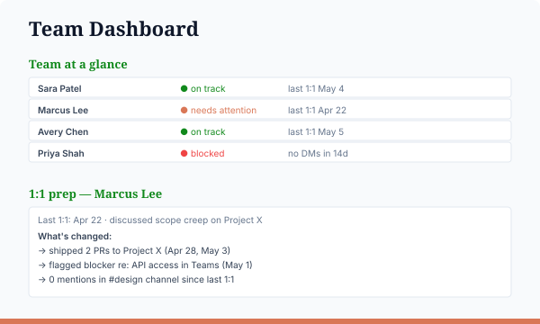

👥 Team Management
What you'll build
The same engine as the stakeholder dashboard, framed for direct reports. Each team member is a markdown file (Role, Goals, Last 1:1, Open Items, Strengths, Growth Areas). A notes/ folder holds your 1:1 notes. The slash command reads all of it, pulls fresh M365 activity (1:1 invites, mentions, emails), and renders a team-at-a-glance plus 1:1 prep cards. Like the stakeholder recipe, it writes activity summaries back into each report's MD so the record deepens automatically.

What you'll need
- Claude Code installed
- The Microsoft 365 connector authenticated
- A
team/folder with<name>.mdper direct report, plus anotes/folder for 1:1 notes (recipe will scaffold)
Step 1 — Drop in the slash command
Save this file at ~/.claude/commands/team-update.md:
---
description: Update team dashboard from MD files + 1:1 notes + M365 activity
---
You are building a team-management dashboard for a director who manages
direct reports.
PERSISTENT MEMORY
- team/<name>.md — one file per direct report. Sections:
Role, Goals, Last 1:1, Open Items, Strengths, Growth Areas.
- notes/ — markdown notes from recent 1:1s (filename: YYYY-MM-DD-name.md).
Both compound over time.
LIVE SIGNAL
- Microsoft 365 connector — recent 1:1 invites and acceptance, Teams
mentions/DMs, emails, calendar density per person.
Default lookback: 14 days.
WHAT TO DO
1. Read every team/<name>.md. Read every file in notes/.
2. For each direct report, fetch M365 activity in the lookback window.
3. Build the dashboard:
- Team-at-a-glance (status: on track / needs attention / blocked)
- 1:1 prep cards (per report: what to revisit since last meeting)
- Open commitments (who owes whom what, by when)
- Growth tracker (recent progress against each report's growth areas)
4. AFTER rendering, append a dated activity summary into each report's MD
under a "Recent activity" section. Examples of what to include:
"1:1 held 2026-05-04 — discussed onboarding plan", "no DMs in 14 days".
5. Write site/index.html.
OUTPUT
- site/index.html, site/styles.css (one-time)
- Updated team/<name>.md files
- A short summary in chat.The version above is the slash command body in compact form. The full recipe with notes and customization knobs lives in recipes/team-update.md — when in doubt, copy from there.
Step 2 — Run it
> /team-update
✓ Read 6 team files + 14 1:1 notes
✓ Fetched M365 activity (last 14 days)
✓ 1 report flagged blocked (no DMs, missed 1:1)
✓ 5 open commitments due this week
✓ Wrote site/index.html
✓ Appended activity to 6 MD filesStep 3 — See it
> open site/index.htmlCustomize
- Review cadence. Default expects weekly 1:1s; tune the "stale" rule in the slash command body.
- Lookback window. 14 days by default — adjust for sparser remote teams.
- Sections written back. Decide whether to log low-signal activity ("no DMs in N days") or only meaningful events.
Why directors care
Walk into 1:1s prepared without re-reading every chat thread. The markdown record of each direct report deepens automatically every time you run it — useful at review time, useful when you transition a report to another manager, useful when memory inevitably fails.